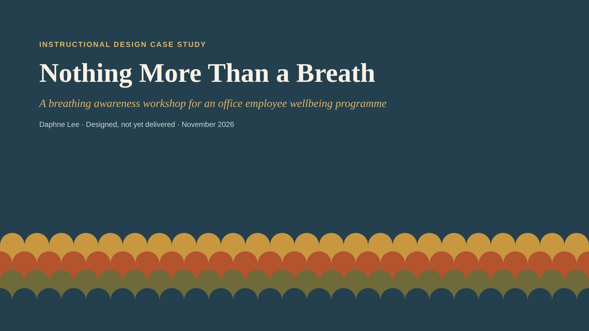
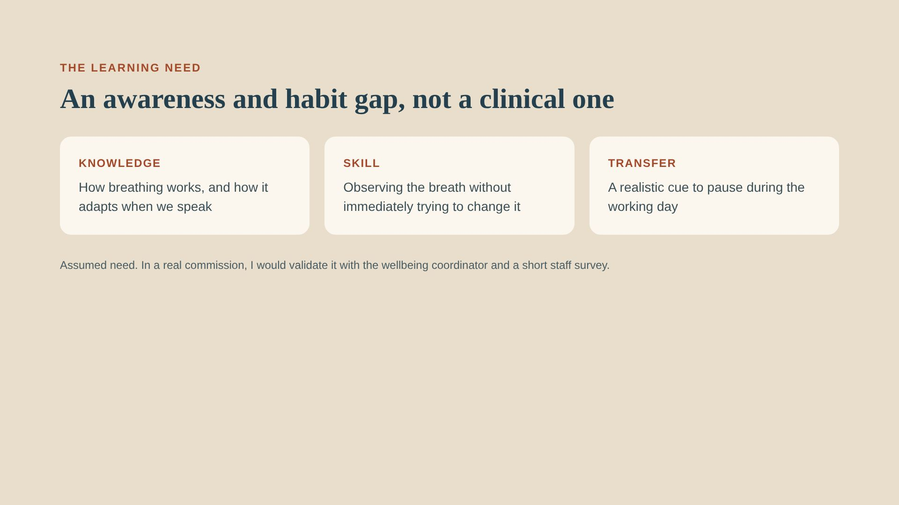
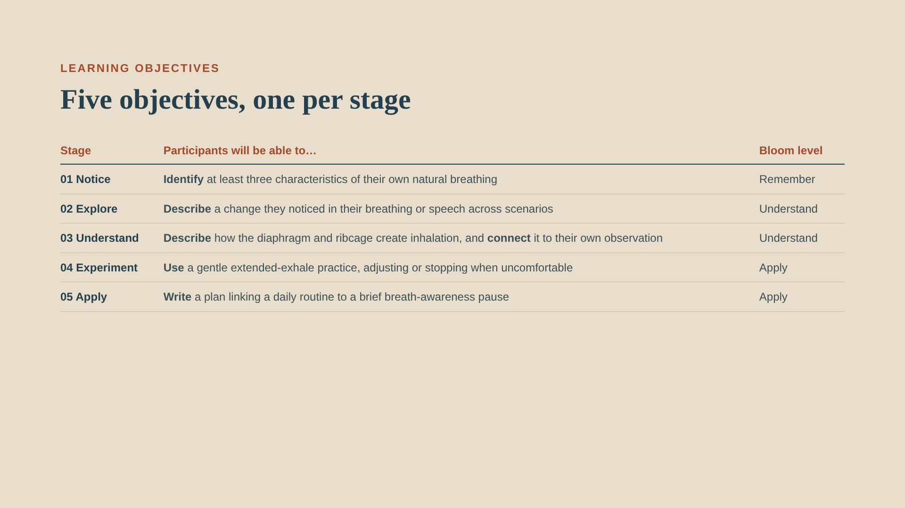
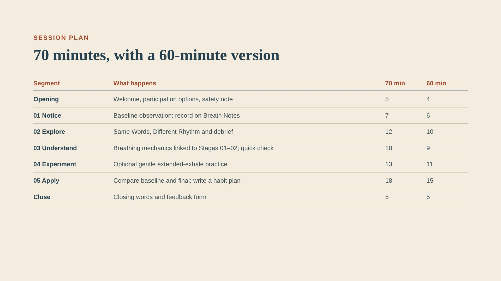
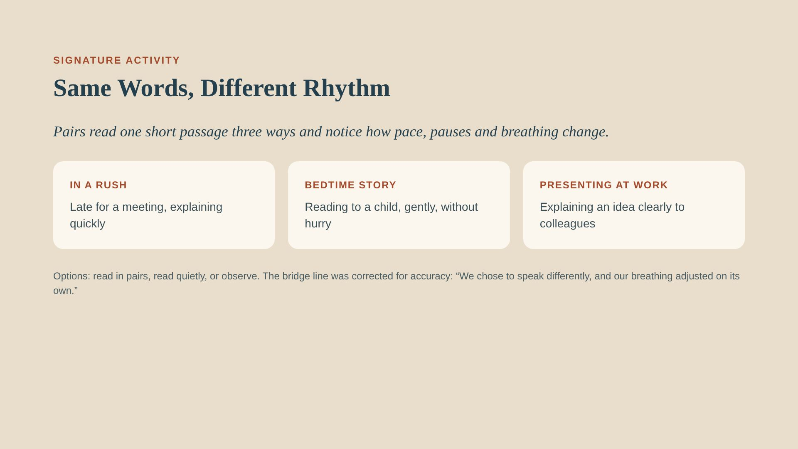
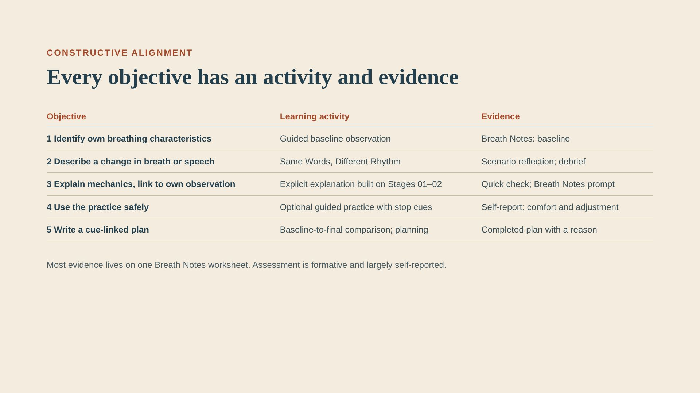

Turning information into meaningful experiences.
I make complex information clear, structured and easy to learn. Civil engineering and sustainability background, now building a practice in learning and experience design.
Is learning only about knowing, or about becoming aware enough to do something differently?
What I know, understand and think.
What I value, feel, appreciate or become more conscious of.
What I do, practise or respond differently to.
Learning is not merely the acquisition of information. Sometimes the change is visible in our actions; sometimes it begins quietly in our thoughts, awareness and perspectives.
What I can bring
Three threads run through my work.
Learning now: how people learn and remember, how to design learning that works, and how to use AI as a helper while keeping human judgement in charge.
Selected work
Instructional design project · designed, not yet deliveredNothing More Than a Breath: a breathing awareness workshop
A 70-minute experiential workshop for an employee wellbeing programme, for office-based staff with no prior experience. I designed it from the learning need through to the evaluation plan. The delivery context is assumed: no organisation commissioned it.






1 · The project. A 70-minute workshop, designed from the learning need to the evaluation plan.
Tap a slide to open it full size. On a phone, turn it sideways for the biggest view.
The need
An awareness and habit gap, not a clinical one: knowing how breathing works, noticing it without trying to change it, and having a realistic cue to pause during the working day.
Design decisions
- Experience before explanation: Notice, Explore, Understand, Experiment, Apply, so the science explains what people have just noticed.
- Five measurable objectives, each matched to an activity and to evidence of learning.
- A role-play activity, Same Words, Different Rhythm: one passage read three ways, to notice how speech and breath change together.
- Breathing content checked against published sources. Checking also caught an inaccurate claim in my own facilitator script, which I corrected.
- Every activity optional, with no breath-holds and no health promises.
Beyond the room
Die-cut stickers for each employee and a poster for the office, designed with the four laws of behaviour change from Atomic Habits, plus a written “after I…, I will…” plan for each participant.
Evaluation
Planned across Kirkpatrick Levels 1 to 3. There are no results yet, because the workshop has not been delivered.
Process
AI-assisted, human-led. The concept, audience, metaphor and design decisions are mine.
Personal projectBreathing practices in the browser
Two guided pages, Box Breathing and 4-3-7 Breathing, for beginners who want a short, guided practice they can start in a browser, with no app or sign-up. Each page lets the person choose the pace and the length.
Design decisions
- Short, clear instructions before starting.
- Customisable durations, so people go at their own pace.
- Visual pacing for each phase.
- A minimal, calm interface.
Volunteer, ProjekWasteWhy should we care about COP31?
A 7-slide Instagram carousel from a title-only brief. I turned UNFCCC material, full of institutional language and policy detail, into plain-language content in Canva.
Who it’s for
A broad, non-specialist audience with little or no prior knowledge of COP31 or climate policy. So I used plain language, cut technical terms, split the content into short sections and linked an international event to everyday life.
From the source to the slides
Source: UNFCCC, About COP31. Its overview centres on putting climate solutions into practice and the global energy transition. Instead of listing technical priorities, I organised the content into three stages: global discussions, national responses and everyday impact.
Before and after: slide 4
The UNFCCC describes COP as where countries agree actions on limiting warming, adapting to climate impacts and moving away from fossil fuels. Negotiations cover adaptation, emissions, climate finance and a just transition, alongside a Climate Action Agenda that brings in businesses, cities and civil society.
Three stacked levels linked by arrows: global level, national level and everyday life. The last level covers energy, resources, cities and climate resilience, so the reader sees how a conference decision reaches daily life.
What changed: a list of negotiation topics became a three-step path from global decisions to national policy to everyday life. The national and everyday-life steps are my own framing, added to help readers relate.
What I left out
Negotiation mechanisms, technical policy detail, institutional terminology and the Climate Action Agenda track, so the focus stays on how international decisions connect to people’s lives.
The aim
To move readers from knowing what COP31 is to asking why it matters.
View the published post on Instagram
Path
Hook, define, explain, connect global to everyday life, localise to Malaysia, relate, act.
Background
Let’s talk
Open to learning and experience design, digital learning content and visual communication roles, and to freelance educational content.
Message me on LinkedIn